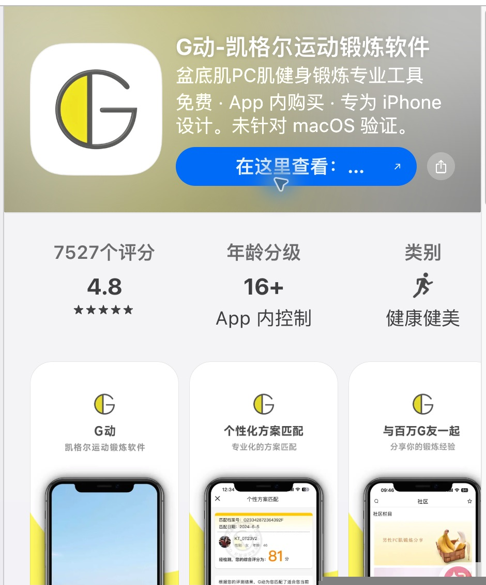
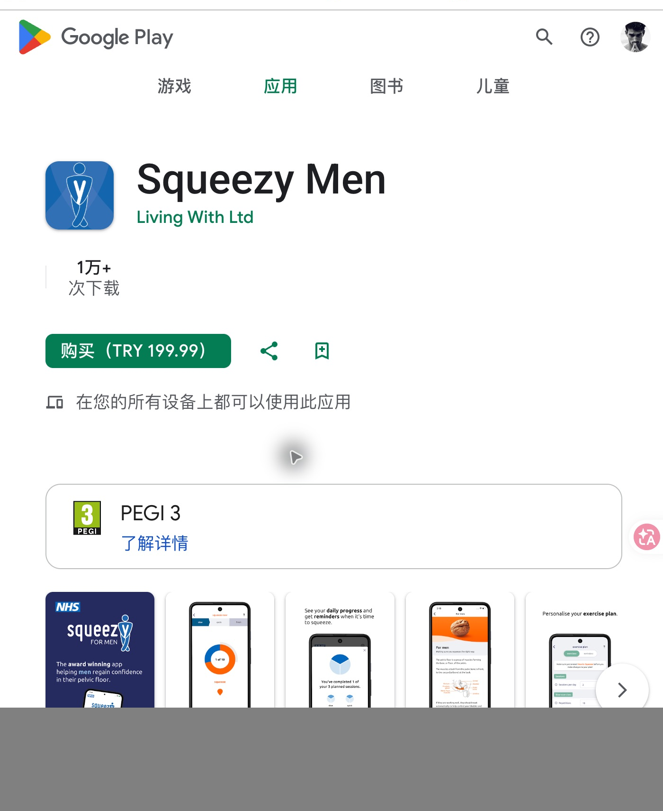

随身语音教练
耐力 · 第 3 / 6 次完全放松
06秒 · 休息
今日任务优先，能力与记录为次级目的地。今日/能力/记录三个稳定底部入口；训练中收起导航。
适合：日常训练路径短
代价：首屏难呈现所有历史明细
首次摸底 → 训练等级建议 → 今日自动组合 → 耳机语音训练 → 分类历史。请选择你希望继续深化的整体方向。
等待人工选择 · 尚未选中任何方向今日任务优先，能力与记录为次级目的地。今日/能力/记录三个稳定底部入口；训练中收起导航。
适合：日常训练路径短
代价：首屏难呈现所有历史明细
| 耐力 | 4秒 / 放松6秒 × 6 |
| 快速 | 1秒 / 放松3秒 × 6 |
能力档案为中心，训练处方和趋势作为并列模块。能力/训练/趋势/设置四个稳定入口与模块分段。
适合：等级解释可追溯
代价：首次进入阅读负担较高
一次完整练习为主线；能力与历史按章节收纳。无常驻底栏；手册目录、返回与日志互链。
适合：第一次更容易理解动作与放松
代价：章节路径比 A 长
| 设计轴 | A · 语音教练 | B · 能力工作台 | C · 训练手册 |
|---|---|---|---|
| IA / 首页 | 今日任务优先，能力与记录为次级目的地 | 能力档案为中心，训练处方和趋势作为并列模块 | 一次完整练习为主线；能力与历史按章节收纳 |
| 结构 | 留白卡片与单步骤摸底；沉浸式播放器 | 工作表、矩阵、分类趋势；阶段时间线播放器 | 连续章节、训练行程、横向节奏带与逐日日志 |
| 导航 | 今日/能力/记录三个稳定底部入口；训练中收起导航 | 能力/训练/趋势/设置四个稳定入口与模块分段 | 无常驻底栏；手册目录、返回与日志互链 |
| 密度 | 低密度，概览后按需深入 | 中高密度，关键数值同屏比较 | 渐进揭示，叙事中密度；单页只完成一个章节目标 |
| 交互 | 逐步摸底 → 确认建议 → 一键语音；训练以听为主 | 质量检查与数值工作表 → 确认处方 → 执行阶段队列 | 质量教学章节 → 五维摸底 → 采用起点 → 沿训练行程执行 |
| 数据 | 分类摘要与轻量日历；不显示综合分数 | 分类表格与按日训练量小图；能力与练习量分区 | 六阶负荷示意与逐日分类日志，周合计作收束 |
本轮研究通过公开产品与指导来源验证模式。以下是 G动与 Squeezy Men 的本地界面证据；Kegel Trainer 和 Elvie 的支持来源与适用边界见完整材料。

